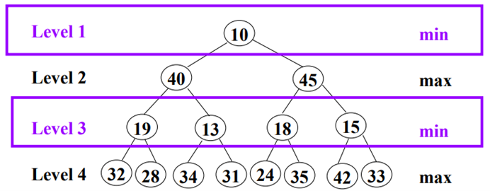
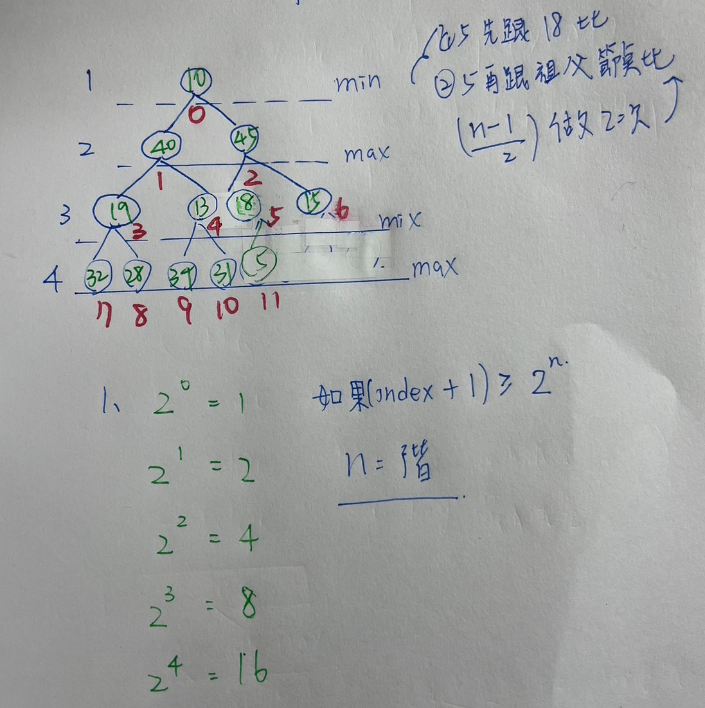

單元二 : 堆積變形 varitions heap
- Double-Ended Priority Queue (DEPQ)
- min-max heap 最大最小堆積
- Insert any key
- Delete smallest key
- Delete largest key
★ min-max heap 原理

遞迴定義min.max區塊
可以用array implement
★ min-max heap 新增資料

1. Decide which Level : min or max區塊
2. Check whether to swap with its parent
-